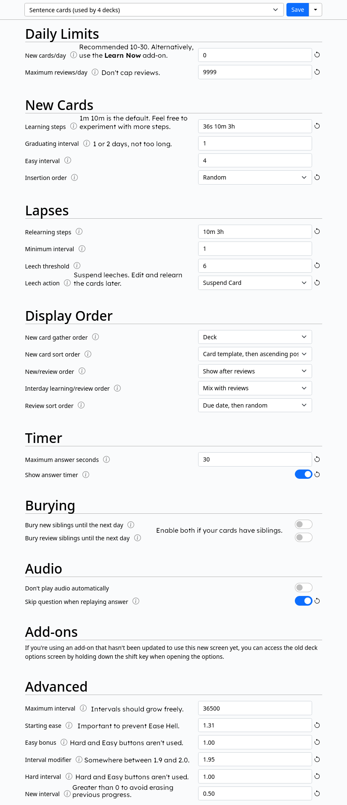
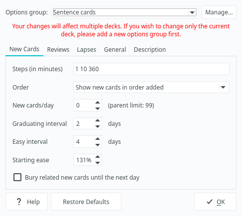
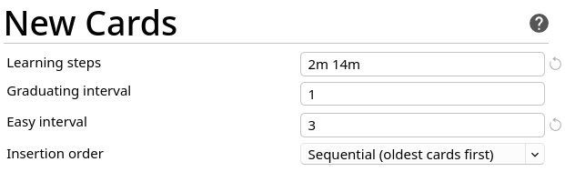
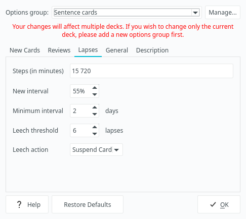

Setting up Anki
Anki is a Spaced repetition system (SRS), a program which allows you to create, manage and review flashcards.
Many language learners find Anki useful to quickly memorize (front-load) core vocabulary of their target language (TL), as well as help them remember new material later.
One of the downsides of Anki is that it can be a little difficult to learn how to use. Depending on how you use it, you can either greatly decrease your time spent studying or make using Anki a living hell for yourself. If you find yourself confused about how Anki works, it is recommended that you read the Anki manual. However, because it's highly detailed and technical, the bulk of this article will focus on explaining the most useful Anki settings to help you get things up and running as quickly as possible.
Installation
There are several ways to install Anki.
- Using your distribution's package manager (pacman, apt, dnf, etc.).
- Using pipx, a software installer for Python programs.
- By downloading a release from the official website.
The first method guarantees that you'll have the right dependencies installed, but you may get an old version of Anki. Distro maintainers are not very good at keeping Anki up-to-date, although on rolling release GNU distributions this is not as noticeable. The second method guarantees that you get the latest version, but you need to make sure you have all the dependencies installed. And the third method is for operating systems that don't have package managers.
Please don't install Anki via FlatPak, Snap packages or other non-native package managers. People have been reporting various problems connected to these installation methods.
If you are running Wayland, please switch to Xorg to avoid possible issues.
Using your package manager
- On Arch Linux and other pacman-based distributions
Anki is available in third-party repositories:
Chaotic and
archlinuxcn.
These are repositories that provide prebuilt AUR packages
so that users don't need to build such packages themselves.
After you enable a third-party repository,
install Anki with
sudo pacman -S ankias any other package. - There's a prebuilt anki-bin package in the AUR.
- If you're not an Arch Linux user, I'm sure you'll find Anki in repositories of your distribution. To find Anki for your OS you can use pkgs.org.
- Debian users and users of other stable distros should note that outdated versions of Anki work poorly with most add-ons, especially new ones. Use a version released at least 6 months ago or newer.
Using pipx
The latest version can be installed with the aqt package.
$ pipx install "aqt[qt6]"
Notes
pipxplaces executable files in~/.local/bin/by default. Don't forget to add this directory to the PATH.- To run Anki, type
ankiin the terminal and press Enter. However, having a desktop entry is more convenient. Download this file and save it in~/.local/share/applications. - If after installing Anki with
pipxFcitx doesn't work, addexport QT_PLUGIN_PATH=/usr/lib/qt/pluginsto the list of environment variables. - Anki depends on mpv to play audio.
You have to install it separately with
pacmanor another package manager. - You may have to install PyQt5 (PyQt6) as well.
- Anki
2.1.50and later additionally requires installing PyQtWebEngine and PyQt5-stubs (PyQt6-stubs) from PyPI. PyQt5(PyQt6) andPyQtWebEnginecan be also obtained from the official Arch Linux repositories.
You can tell pipx to install a specific version.
This is handy when the latest version malfunctions.
pipx install "aqt==2.1.60"
There are two versions,
depending on which GUI toolkit is used,
Qt6 and Qt5.
You can change the toolkit like this:
$ pipx install 'aqt[qt5]'
$ pipx install 'aqt[qt6]'
Normally, this is not needed.
From the official website
If your operating system has a package manager, like most GNU+Linux distros, it is not recommended to install directly from the official website, since a package manager can automate downloading, installing, uninstalling and updating.
But some operating systems, especially Windows-like OSes such as ReactOS, don't have this feature. In this case, head to apps.ankiweb.net and read the instructions there.
Troubleshooting
- If you're still unable to install or run Anki, refer to Anki Manual and Anki Betas guide.
- Some people report that they see a black screen on startup,
and that you should run Anki with the no sandbox parameter:
anki --no-sandboxto avoid it.
Sync your mobile device
By signing up for AnkiWeb you can keep your cards synchronized across multiple machines. You can also sync between devices. Install AnkiDroid on your Android device and sync your collection. This will allow you to review your flashcards when you're outside and don't have access to your computer. I prefer downloading the latest alpha from GitHub because the releases on F-Droid tend to be slow.
To sync your collection on desktop, press Y or click "Sync" on the toolbar.
Import an example mining deck
After you install Anki, you need to set up a Note Type
to keep your flashcards formatted as you like.
Anki comes with a few basic Note Types, but they aren't suited for learning Japanese.
Because making your own Note Type is a tedious process
consisting of essentially adding the fields you need and copy-pasting HTML and CSS,
I recommend you to import a pre-made mining deck.
A sample mining deck can be found here:
Japanese language support
Press "Tools" > "Add-ons" > "Get Add-ons" to download and install the AJT Japanese add-on. Then restart. The add-on is bundled with Mecab, so you don't need to install any additional dependencies.
Anki settings
In Anki you can learn languages, biology, math, physics, etc., and Anki isn't optimized for any of them in particular.
To optimize Anki for language learning I recommend the following settings.
Preferences
Preferences control behavior of your Anki collection.
They apply to all decks.
You can access preferences by going to Tools > Preferences… on Anki’s main window.
Appearance
- Video driver: Vulkan. Vulkan is supposed to be the latest and greatest thing out there. If you encounter visual glitches, set this to 'OpenGL' or 'Software'.
- Style: Native. Enabling native styles allows the user to apply their preferred kvantum theme and disables the childish Apple-esque theme that is set by default.
- Minimalist mode. Newer versions of Anki come with an absolutely horrendous UI. The minimalist mode was added after a widespread backlash from the users. Enable it to debloat the UI.
Review
- Learn ahead limit.
I recommend keeping the value close to the default of 20 minutes.
Mine is
35minutes. When you finish your daily reviews and new cards, Anki will start ignoring intervals of cards in the learning queue less than this value and will start showing the cards to you right away. This is good for cards with small intervals because it lets you finish your reps without breaking the flow and waiting for your cards to become ready to be reviewed. But if you set theLearn ahead limittoo high, cards with longer learning steps will be shown to you too early. Keeping the value on the lower side enforces the wait time of your steps. If you set this to0, Anki will always wait the full delay, so it's not optimal either. - Spacebar also answers card — disabled. It is possible to accidentally press Space twice when grading. It's also confusing when one key serves two different purposes at the same time.
Editing
- Paste clipboard images as PNG — disabled. PNG images take more disk space than WebP images. To paste images as WebP, install this addon.
Other
Deprecated
Show new cards after reviews. You always want to finish your reviews first, and you don't want new cards to slow you down. You can choose
Show new cards before reviewsif you are consistent and feel confident that you will never have a backlog of Anki reviews. Mixing is probably the worst way and will confuse you when a new card pops up after a streak of mature cards.Note: This option has been moved in newer versions.
Anki 2021 scheduler. This is a new scheduler that comes with Anki 2.1.45+. If your version of Anki doesn't show this option, it has been already enabled by default. Otherwise, make sure to enable it.

Preferences.
Options Groups
Each deck has an Options Group attached to it.
Options Groups define deck-specific settings.
Every deck can have different settings depending on its Options Group.
The sub-deck options will override the parent deck options.
Click Deck > Options to access Options Groups settings.
You can hit Manage to create additional options groups.
Warning: If you're running Anki 2.1.45+,
you will be presented with a new "Options Groups" settings dialog.
As usual, Anki developers are making the app worse with each release.
The new layout won't match with the screenshots shown on this page.
If you want to bring up the old version of the dialog,
click "Deck Options" while holding Shift.
Consider creating separate Options Groups for each type of material you learn. You can assign each Options group to multiple decks. This is useful for making small adjustments to individual decks based on the cards the decks store.
New menu
The new Options Groups settings menu can be seen on Anki starting from 2.1.45. The options are described later in this article.

Settings.
Below are the options I recommended using.
New cards

New cards.

New cards — Updated menu.
Learning steps
This is the number of times you have to answer good on the card
before it graduates.
I recommend beginners to stick to the default learning steps of 1 10.
When you get more familiar with Anki you can add your custom steps and experiment with them.
But don't overdo it: too many steps will make you spend too much time in Anki
for no substantial gain in retention.
The learn ahead option set in the previous section
will make sure that you won't be shown cards with large steps too early.
You can experiment with so-called micro steps
if you see that remembering new cards is more difficult than you thought.
This means specifying an interval in seconds instead of minutes.
For the new settings menu you just type 30s for 30 seconds.
For the old menu you need to specify a decimal like this: 0.5.
New cards/day
In general controls how many cards you learn each day,
though you can always learn more if you want.
The default value of 20 cards is very reasonable and manageable for most users.
However, if you feel overwhelmed by the amount of reviews you have to do,
lower it to about 10 new cards a day.
Doing more cards is also possible if you can keep up with the review load,
but generally in the AJATT community it is advised to learn no more than 30 new cards a day.
I keep my setting at 0.
This is because I use Learn Now Button
to manually pick and learn cards from my Sentence Bank.
For me personally it's better than having Anki decide for me.
Reviews

Reviews.
Most settings have been moved to Advanced due to a UI update.
Maximum reviews/day
This value sets an arbitrary cap on the amount of reviews you can do each day. If the cap is low, your due cards won't magically disappear after you've done with the reviews. Instead, they will form a backlog of likely forgotten cards. Because you want to review all your due cards every day, set this at a high value.
Lapses

Lapses.
Steps (in minutes)
Works similar to the setting in the New Cards tab,
except it’s for cards you've pressed “Again” on.
It affects how well you will relearn your lapsed cards.
Beginners should set one learning step and observe their experience.
The default of 10 minutes is okay, but I prefer a slightly bigger one.
Later you can experiment with more learning steps.
Leech threshold and Leech action
Leeches are cards that you keep on forgetting and relearning over and over. Keep the leech threshold low (4-6 lapses) and suspend the cards when they become leeches. You have to properly deal with leeches instead of letting them rotate in your deck and slow you down. Possible ways to deal with leeches will be explained in How to review.
Display order
Here most settings are not that significant. Feel free to experiment for yourself.
New/review order appears to be the new equivalent of the Show new cards after reviews setting that was formerly under Preferences. To maintain the same behavior, set it to "Show after reviews".
If you have New cards/day set to 0, this setting should have no effect.
Advanced
FSRS
FSRS is a new scheduler that replaces the default one. Although for some reason this setting resides in "Options Groups", it works for the entire Collection (profile). Leave it disabled since FSRS is not mature enough for us to be able to say with confidence that it is better than the default scheduler. As of 2024, due to various bugs people have reported negative things about it. Bugs tend to get fixed over time, so this section might be revised in the future.
Maximum interval
Intervals of your cards can never increase beyond this limit.
I advise setting it as big as possible.
The default is 36500 days, which is equal to 100 years.
However, you can decrease this to a smaller number if you want to ensure long-term retention.
Starting ease
Every card has a property called Ease factor.
Over time the Ease factor can change and cause negative side effects.
Set the Starting Ease to 131% to avoid the side effects.
More about it later.
Easy bonus and Hard interval
Extra multipliers that are applied to a review card's interval when you rate it "Easy" or "Hard".
Ignore these settings as you should never use the "Hard" and "Easy" buttons and don't need to introduce additional variables in the grading process.
Hard and Easy buttons.
The "Hard" and "Easy" buttons have counter-intuitive effects on Anki's algorithm, which causes long-term problems with Ease of your cards.
Note: AJT Flexible Grading can hide unwanted buttons. It is covered in greater detail later. An alternative way to make "Hard", "Good" and "Easy" buttons behave the same would be using the V3 scheduler's custom scheduling mechanism.
Interval modifier
A multiplier that is applied to a review interval when answering Again. When you answer Good on a card, its interval is recalculated.
New interval = current interval * Card's ease * Interval Modifier
By default, new interval is 2.5 * last interval.
At its default value of 100%, Interval Modifier does nothing.
However, this is not what you want
because you've just lowered Starting Ease to 131% in a previous setting.
To restore the balance bump Interval Modifier up to 192%.
1.92 * 1.31 is roughly equal to 2.5.
Later after you've used Anki for a couple of months and have had high retention rate, you can increase the value further and do fewer reviews. If you forget too many cards, it is recommended to lower it a bit.
New interval
You often still somewhat remember a word in Japanese even if you fail the card. A different context or another word, or studying it on a different day may jog your memory. Thus, we don't need to fully penalize a fail here.
For example, if you use a new interval of 50%, when you lapse a card and relearn it, the interval won't be reset back to 1 day. It will be half of the previous interval. The recommended range in the AJATT community is between 50 and 75%.
For a word cards deck you may set it to about 30-40%
because word cards are noticeably harder than sentence cards.
I explain differences between card templates later.
Synchronizing large collections
Don't sync your collection with AnkiWeb
if you store large files in it
or if you are a heavy user of subs2srs.
subs2srs decks take a lot of disk space.
Use a different Anki profile to store them.
The extra profile should not be synced.
To make multiple profiles, press "File" > "Switch profile".
Alternatively, use a personal Anki sync server. anki-sync-server is a sync server for Anki which you can sync against instead of AnkiWeb.
Ease Hell
Ease Hell is when Anki gradually lowers Ease factors of your flashcards, assuming they are more difficult than they actually are. A card with a low Ease factor has to be reviewed more often. As a result, you are forced to review too many cards each day.
Anki decreases the Ease factor of a card every time you fail it or answer "Hard". This leads to intervals growing slower, and eventually most of your cards end up having a low Ease factor. This is when you are in Ease Hell.
Similarly, pressing "Easy" causes the Ease to increase. The intervals of such cards grow faster than normal, which leads to forgetting in the future.
Side effects of each answer button:
- Again - Ease decreases by 20%.
- Hard - Ease decreases by 15%.
- Good - No side effect.
- Easy - Ease increases by 15%.
The reason I recommend never pressing "Hard" and "Easy" is to avoid the side effects.
But this still leaves the problem with the "Again" button unsolved.
The lowest possible Starting Ease in Anki is 131%.
By setting Starting Ease to the lowest possible value
while simultaneously increasing Interval Modifier
you make sure Ease factors of your cards can't decrease anymore,
essentially fixing the issue.
There's a legitimate possibility that some cards in your collection are more difficult than the others. To account for that fact I recommend having a low Leech threshold. The hard cards are going to be suspended sooner. Once a card becomes a leech, you should investigate why it happened.
Open the Anki Browser and type
tag:leechto display your leeches.
If you've been using Anki for a while before reading this page then you'll need to update your collection to reset the Ease factor of the older cards. To update older cards, use the RefoldEase add-on.
More about the Ease Hell:
GTK theme
Anki uses the Qt toolkit. If you're not running Plasma (or possibly another Qt-based desktop environment) Qt applications won't be styled according to the GTK theme you may have selected.
There are multiple ways to tell Anki to use your GTK theme. But before you proceed, go to "Preferences" > "Appearance" and make sure that "Style" is set to "Native".
qt5-styleplugins
If your version of Anki uses
Qt5, install qt5-styleplugins. If your version of Anki usesQt6, install qt6gtk2.Set the following environment variable:
export QT_QPA_PLATFORMTHEME=gtk2
Then re-login or reboot.
kvantum
Install the requirements: kvantum, qt5ct, qt6ct.
$ sudo pacman -S kvantum qt5ct qt6ct
Launch
kvantummanager, select "Change/Delete Theme" and select your theme from the combo box.Press "Use this theme", then "Quit".
Open
qt5ct, thenqt6ct. Selectkvantumas theme engine. Apply changes.Set the following environment variable:
- If your version of Anki uses
Qt6:export QT_QPA_PLATFORMTHEME=qt6ct - If your version of Anki uses
Qt5:export QT_QPA_PLATFORMTHEME=qt5ct
- If your version of Anki uses
Then re-login or reboot.
This method consistently works if Anki uses Qt5.
Currently, there are problems with Qt6.
To work around it,
install the Qt5 version of Anki
(and/or uninstall PyQt6-* packages with pip if they were installed)
and instead of setting the environment variable system-wide,
set it locally.
It can be achieved by launching Anki like this:
QT_QPA_PLATFORMTHEME=qt5ct anki
To make the setting persist,
in the .desktop file (see pip install notes) change Exec= to:
Exec=env QT_QPA_PLATFORMTHEME=qt5ct anki %f
Trying different versions
If you want to install and test multiple versions of Anki at the same time, use the following functions. Add them to your ~/.bashrc or ~/.zshrc.
Install a specific version.
For example, run anki_test_install 2.1.45 to install Anki 2.1.45.
anki_test_install() {
local -r version=${1:?No version provided.}
local -r dir=~/.local/share/anki_builds/"anki_$version"
(
mkdir -p -- "$dir" && cd -- "$dir" || exit
python -m venv --system-site-packages pyenv
./pyenv/bin/pip3 install --upgrade pip
./pyenv/bin/pip3 install --upgrade --pre "aqt==$version"
)
}
Run a specific version. This script uses dmenu to ask what version you want to run.
anki_test_run() {
local -r dir=~/.local/share/anki_builds
if [[ $* ]]; then
local -r choice=$*
else
local -r choice=$(find "$dir" -mindepth 1 -maxdepth 1 -type d -printf '%f\n' | dmenu)
fi
if [[ -n $choice ]]; then
(cd -- "$dir/$choice" && ./pyenv/bin/anki)
fi
}
These functions are available on my GitHub.
Unicode normalization
If you are studying certain 旧字体 characters, you may have noticed that when you put them in Anki, they are automatically converted to their 新字体 versions. For example, you make a card with 「禎」, and when you open the card again, the kanji is replaced with 「禎」.
If you are studying 旧字体 characters,
including certain 人名用漢字,
and wish to prevent them from being converted into modern equivalents,
open the debug console by pressing Ctrl+Shift+;
and paste the following.
Press Ctrl+Enter to apply.
mw.col.conf["normalize_note_text"] = False
This setting should be applied to each collection (Anki profile) individually.
Read this Anki forum post for reference.
Tags: anki